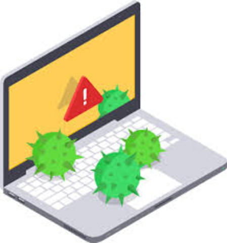
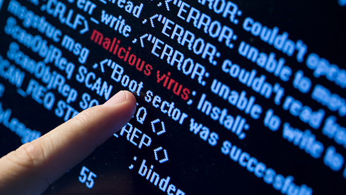

Son virus que se propagan a traves de un software, son nocivos y algunos contienen una carga dañina con distintos objetivos, desde una simple broma hasta realizar daños importantes en los sistemas, o bloquear las redes informaticas generando trafico inutil.p
Redes Sociales
Sitios Fraudulentos
Redes P2P
Dispositivos USB/CDs/DVDs infectados
Sitios web legitimos pero infectados
Adjuntos en Correos no solicitados (Spam)
Algunos de los tipos de virus informaticos son:
El virus se aloja en la memoria del ordenador y se activa cuando el sistema operativo se ejecuta, infectando a todos los archivos que abren.
El objetivo de estos virus es replicarse y actuar cuando son ejecutados; infectan los ficheros en el directorio o carpeta.
Estos tipos de virus borran la informacion contenida en los ficheros que infectan.

Este tipo virus afecta al sector de arranque del disco duro.
Infectan archivos que se crean utilizando ciertas aplicaciones o programas que contienen macros como .doc, .xls, pps. etc.
Un programa Antivirus
Un programa cortafuegos